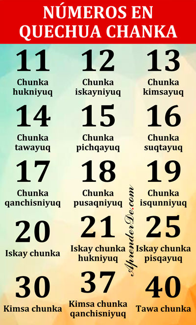

En esta entrada aprenderás los números en quechua chanka ayacuchano,
¡vamos a ello! Además, en esta pagina tienes la lista más completa de números en quechua de todo internet!
Estos son los números básicos en cualquier idioma.
✅0: Chusaq
✅1: Huk
✅2: Iskay
✅3: Kimsa
✅4: Tawa
✅5: Pichqa
✅6: Suqta
✅7: Qanchis
✅8: Pusaq
✅9: Isqun
✅10: Chunka
✅10:
✅20: Iskay
✅30: Kimsa
✅40: Tawa
✅50: Pichka
✅60: Suqta
✅70: Qanchis
✅80: Pusaq
✅90: Isqun
✅1000: Waranqa
✅2000: Iskay waranqa
✅3000: Kimsa waranqa
✅4000: Tawa waranqa
✅5000: Pichka waranqa
✅6000: Suqta waranqa
✅7000: Qanchis waranqa
✅8000: Pusaq waranqa
✅9000: Isqun waranqa
Una vez que conocemos los números base y las decenas, podemos pasar a números de 2 cifras.
Lo bueno es que el quechua sigue reglas muy sencillas para nombrar a los números, las cuales son:
. Primero se pone el nombre de la decena.
. Después se pone el nombre de las unidades, es decir el ultimo digito.
Si dicho nombre termina en una vocal se le añade el sufijo -yuq,
y si acaba en consonante o semiconsonante se le añade el sufijo -niyuq
1_. Los números 3 (kimsa), 4 (tawa), 5 (pichqa), 6 (suqta) terminan en vocal,
a estos se añadiria el sufijo –yuq con este resultado:
kimsayuq, tawayuq,
pichqayuq, suqtayuq.
2_. Los números 1 (huk), 7 (qanchis), 8 (pusaq) y 9
(isqun) terminan en consonante y 2 (iskay) termina en semiconsonante,
a estos se añade el sufijo –yuq con el auxiliar –ni,
pues si no se pone el auxiliar –ni dificulta la entonación de la palabra,
con este resultado: Hukniyuq,
iskayniyuq, qanchisniyuq,
pusaqniyuq, isqunniyuq.

11 al 40
Las reglas son casi las mismas que para los números de 2 dígitos.
Solo hay que añadir antes de las decenas el nombre de las centenas.
Además, cuando el número termina en una decena se añade el sufijo -yuq;
por ejemplo el 110 sería Pachak chunkayuq,
el 370 sería Kimsa pachak qanchis chunkayuq.
Ahora veamos la lista completa de números en quechua chanka ayacuchano del 101 al 1000:
✅101: Pachak hukniyuq
✅102: Pachak iskayniyuq
✅103: Pachak kimsayuq
✅104: Pachak tawayuq
✅105: Pachak pichqayuq
✅106: Pachak suqtayuq
✅107: Pachak qanchisniyuq
✅108: Pachak pusaqniyuq
✅109: Pachak isqunniyuq
✅110: Pachak chunkayuq
✅111: Pachak chunka hukniyuq
✅112: Pachak chunka iskayniyuq
✅113: Pachak chunka kimsayuq
✅114: Pachak chunka tawayuq
✅115: Pachak chunka pichqayuq
✅116: Pachak chunka suqtayuq
✅117: Pachak chunka qanchisniyuq
✅118: Pachak chunka pusaqniyuq
✅119: Pachak chunka isqunniyuq
✅120: Pachak iskay chunkayuq
✅120: Pachak iskay chunkayuq
✅121: Pachak iskay chunka hukniyuq
✅122: Pachak iskay chunka iskayniyuq
✅123: Pachak iskay chunka kimsayuq
✅124: Pachak iskay chunka tawayuq
✅125: Pachak iskay chunka pichqayuq
✅126: Pachak iskay chunka suqtayuq
✅127: Pachak iskay chunka qanchisniyuq
✅128: Pachak iskay chunka pusaqniyuq
✅129: Pachak iskay chunka isqunniyuq
✅130: Pachak kimsa chunkayuq
✅131: Pachak kimsa chunka hukniyuq
✅132: Pachak kimsa chunka iskayniyuq
✅133: Pachak kimsa chunka kimsayuq
✅134: Pachak kimsa chunka tawayuq
✅135: Pachak kimsa chunka pichqayuq
✅136: Pachak kimsa chunka suqtayuq
✅137: Pachak kimsa chunka qanchisniyuq
✅138: Pachak kimsa chunka pusaqniyuq
✅139: Pachak kimsa chunka isqunniyuq
✅140: Pachak tawa chunkayuq
✅141: Pachak tawa chunka hukniyuq
✅142: Pachak tawa chunka iskayniyuq
✅143: Pachak tawa chunka kimsayuq
✅144: Pachak tawa chunka tawayuq
✅145: Pachak tawa chunka pichqayuq
✅146: Pachak tawa chunka suqtayuq
✅147: Pachak tawa chunka qanchisniyuq
✅148: Pachak tawa chunka pusaqniyuq
✅149: Pachak tawa chunka isqunniyuq
✅150: Pachak pichqa chunkayuq
✅151: Pachak pichqa chunka hukniyuq
✅152: Pachak pichqa chunka iskayniyuq
✅153: Pachak pichqa chunka kimsayuq
✅154: Pachak pichqa chunka tawayuq
✅155: Pachak pichqa chunka pichqayuq
✅156: Pachak pichqa chunka suqtayuq
✅157: Pachak pichqa chunka qanchisniyuq
✅158: Pachak pichqa chunka pusaqniyuq
✅159: Pachak pichqa chunka isqunniyuq
✅161: Pachak suqta chunka hukniyuq
✅162: Pachak suqta chunka iskayniyuq
✅163: Pachak suqta chunka kimsayuq
✅164: Pachak suqta chunka tawayuq
✅165: Pachak suqta chunka pichqayuq
✅166: Pachak suqta chunka suqtayuq
✅167: Pachak suqta chunka qanchisniyuq
✅168: Pachak suqta chunka pusaqniyuq
✅169: Pachak suqta chunka isqunniyuq
✅170: Pachak qanchis chunkayuq
✅171: Pachak qanchis chunka hukniyuq
✅172: Pachak qanchis chunka iskayniyuq
✅173: Pachak qanchis chunka kimsayuq
✅174: Pachak qanchis chunka tawayuq
✅175: Pachak qanchis chunka pichqayuq
✅176: Pachak qanchis chunka suqtayuq
✅177: Pachak qanchis chunka qanchisniyuq
✅178: Pachak qanchis chunka pusaqniyuq
✅179: Pachak qanchis chunka isqunniyuq
✅180: Pachak pusaq chunkayuq
✅181: Pachak pusaq chunka hukniyuq
✅182: Pachak pusaq chunka iskayniyuq
✅183: Pachak pusaq chunka kimsayuq
✅184: Pachak pusaq chunka tawayuq
✅185: Pachak pusaq chunka pichqayuq
✅186: Pachak pusaq chunka suqtayuq
✅187: Pachak pusaq chunka qanchisniyuq
✅188: Pachak pusaq chunka pusaqniyuq
✅189: Pachak pusaq chunka isqunniyuq
✅190: Pachak isqun chunkayuq
✅191: Pachak isqun chunka hukniyuq
✅192: Pachak isqun chunka iskayniyuq
✅193: Pachak isqun chunka kimsayuq
✅194: Pachak isqun chunka tawayuq
✅195: Pachak isqun chunka pichqayuq
✅196: Pachak isqun chunka suqtayuq
✅197: Pachak isqun chunka qanchisniyuq
✅198: Pachak isqun chunka pusaqniyuq
✅199: Pachak isqun chunka isqunniyuq
✅200: Iskay pachak
✅201: Iskay pachak hukniyuq
✅202: Iskay pachak iskayniyuq
✅203: Iskay pachak kimsayuq
✅204: Iskay pachak tawayuq
✅205: Iskay pachak pichqayuq
✅206: Iskay pachak suqtayuq
✅207: Iskay pachak qanchisniyuq
✅208: Iskay pachak pusaqniyuq
✅209: Iskay pachak isqunniyuq
✅210: Iskay pachak chunkayuq
✅211: Iskay pachak chunka hukniyuq
✅212: Iskay pachak chunka iskayniyuq
✅213: Iskay pachak chunka kimsayuq
✅214: Iskay pachak chunka tawayuq
✅215: Iskay pachak chunka pichqayuq
✅216: Iskay pachak chunka suqtayuq
✅217: Iskay pachak chunka qanchisniyuq
✅218: Iskay pachak chunka pusaqniyuq
✅219: Iskay pachak chunka isqunniyuq
✅220: Iskay pachak iskay chunkayuq
✅221: Iskay pachak iskay chunka hukniyuq
✅222: Iskay pachak iskay chunka iskayniyuq
✅223: Iskay pachak iskay chunka kimsayuq
✅224: Iskay pachak iskay chunka tawayuq
✅225: Iskay pachak iskay chunka pichqayuq
✅226: Iskay pachak iskay chunka suqtayuq
✅227: Iskay pachak iskay chunka qanchisniyuq
✅228: Iskay pachak iskay chunka pusaqniyuq
✅229: Iskay pachak iskay chunka isqunniyuq
✅230: Iskay pachak kimsa chunkayuq
✅231: Iskay pachak kimsa chunka hukniyuq
✅232: Iskay pachak kimsa chunka iskayniyuq
✅233: Iskay pachak kimsa chunka kimsayuq
✅234: Iskay pachak kimsa chunka tawayuq
✅235: Iskay pachak kimsa chunka pichqayuq
✅236: Iskay pachak kimsa chunka suqtayuq
✅237: Iskay pachak kimsa chunka qanchisniyuq
✅238: Iskay pachak kimsa chunka pusaqniyuq
✅239: Iskay pachak kimsa chunka isqunniyuq
✅240: Iskay pachak tawa chunkayuq
✅241: Iskay pachak tawa chunka hukniyuq
✅242: Iskay pachak tawa chunka iskayniyuq
✅243: Iskay pachak tawa chunka kimsayuq
✅244: Iskay pachak tawa chunka tawayuq
✅245: Iskay pachak tawa chunka pichqayuq
✅246: Iskay pachak tawa chunka suqtayuq
✅247: Iskay pachak tawa chunka qanchisniyuq
✅248: Iskay pachak tawa chunka pusaqniyuq
✅249: Iskay pachak tawa chunka isqunniyuq
✅250: Iskay pachak pichqa chunkayuq
✅251: Iskay pachak pichqa chunka hukniyuq
✅252: Iskay pachak pichqa chunka iskayniyuq
✅253: Iskay pachak pichqa chunka kimsayuq
✅254: Iskay pachak pichqa chunka tawayuq
✅255: Iskay pachak pichqa chunka pichqayuq
✅256: Iskay pachak pichqa chunka suqtayuq
✅257: Iskay pachak pichqa chunka qanchisniyuq
✅258: Iskay pachak pichqa chunka pusaqniyuq
✅259: Iskay pachak pichqa chunka isqunniyuq
✅260: Iskay pachak suqta chunkayuq
✅261: Iskay pachak suqta chunka hukniyuq
✅262: Iskay pachak suqta chunka iskayniyuq
✅263: Iskay pachak suqta chunka kimsayuq
✅264: Iskay pachak suqta chunka tawayuq
✅265: Iskay pachak suqta chunka pichqayuq
✅266: Iskay pachak suqta chunka suqtayuq
✅267: Iskay pachak suqta chunka qanchisniyuq
✅268: Iskay pachak suqta chunka pusaqniyuq
✅269: Iskay pachak suqta chunka isqunniyuq
✅270: Iskay pachak qanchis chunkayuq
✅271: Iskay pachak qanchis chunka hukniyuq
✅272: Iskay pachak qanchis chunka iskayniyuq
✅273: Iskay pachak qanchis chunka kimsayuq
✅274: Iskay pachak qanchis chunka tawayuq
✅275: Iskay pachak qanchis chunka pichqayuq
✅276: Iskay pachak qanchis chunka suqtayuq
✅277: Iskay pachak qanchis chunka qanchisniyuq
✅278: Iskay pachak qanchis chunka pusaqniyuq
✅279: Iskay pachak qanchis chunka isqunniyuq
✅280: Iskay pachak pusaq chunkayuq
✅281: Iskay pachak pusaq chunka hukniyuq
✅282: Iskay pachak pusaq chunka iskayniyuq
✅283: Iskay pachak pusaq chunka kimsayuq
✅284: Iskay pachak pusaq chunka tawayuq
✅285: Iskay pachak pusaq chunka pichqayuq
✅286: Iskay pachak pusaq chunka suqtayuq
✅287: Iskay pachak pusaq chunka qanchisniyuq
✅288: Iskay pachak pusaq chunka pusaqniyuq
✅289: Iskay pachak pusaq chunka isqunniyuq
✅290: Iskay pachak isqun chunkayuq
✅291: Iskay pachak isqun chunka hukniyuq
✅292: Iskay pachak isqun chunka iskayniyuq
✅293: Iskay pachak isqun chunka kimsayuq
✅294: Iskay pachak isqun chunka tawayuq
✅295: Iskay pachak isqun chunka pichqayuq
✅296: Iskay pachak isqun chunka suqtayuq
✅297: Iskay pachak isqun chunka qanchisniyuq
✅298: Iskay pachak isqun chunka pusaqniyuq
✅299: Iskay pachak isqun chunka isqunniyuq
✅300: Kimsa pachak
✅301: Kimsa pachak hukniyuq
✅302: Kimsa pachak iskayniyuq
✅303: Kimsa pachak kimsayuq
✅304: Kimsa pachak tawayuq
✅305: Kimsa pachak pichqayuq
✅306: Kimsa pachak suqtayuq
✅307: Kimsa pachak qanchisniyuq
✅308: Kimsa pachak pusaqniyuq
✅309: Kimsa pachak isqunniyuq
✅310: Kimsa pachak chunkayuq
✅311: Kimsa pachak chunka hukniyuq
✅312: Kimsa pachak chunka iskayniyuq
✅: Kimsa pachak chunka kimsayuq
✅314: Kimsa pachak chunka tawayuq
✅315: Kimsa pachak chunka pichqayuq
✅316: Kimsa pachak chunka suqtayuq
✅317: Kimsa pachak chunka qanchisniyuq
✅318: Kimsa pachak chunka pusaqniyuq
✅319: Kimsa pachak chunka isqunniyuq
✅320: Kimsa pachak iskay chunkayuq
✅321: Kimsa pachak iskay chunka hukniyuq
✅322: Kimsa pachak iskay chunka iskayniyuq
✅323: Kimsa pachak iskay chunka kimsayuq
✅324: Kimsa pachak iskay chunka tawayuq
✅325: Kimsa pachak iskay chunka pichqayuq
✅326: Kimsa pachak iskay chunka suqtayuq
✅327: Kimsa pachak iskay chunka qanchisniyuq
✅328: Kimsa pachak iskay chunka pusaqniyuq
✅329: Kimsa pachak iskay chunka isqunniyuq
✅330: Kimsa pachak kimsa chunkayuq
✅331: Kimsa pachak kimsa chunka hukniyuq
✅332: Kimsa pachak kimsa chunka iskayniyuq
✅333: Kimsa pachak kimsa chunka kimsayuq
✅334: Kimsa pachak kimsa chunka tawayuq
✅336: Kimsa pachak kimsa chunka suqtayuq
✅337: Kimsa pachak kimsa chunka qanchisniyuq
✅338: Kimsa pachak kimsa chunka pusaqniyuq
✅339: Kimsa pachak kimsa chunka isqunniyuq
✅340: Kimsa pachak tawa chunkayuq
✅341: Kimsa pachak tawa chunka hukniyuq
✅342: Kimsa pachak tawa chunka iskayniyuq
✅343: Kimsa pachak tawa chunka kimsayuq
✅344: Kimsa pachak tawa chunka tawayuq
✅345: Kimsa pachak tawa chunka pichqayuq
✅346: Kimsa pachak tawa chunka suqtayuq
✅347: Kimsa pachak tawa chunka qanchisniyuq
✅348: Kimsa pachak tawa chunka pusaqniyuq
✅349: Kimsa pachak tawa chunka isqunniyuq
✅350: Kimsa pachak pichqa chunkayuq
✅351: Kimsa pachak pichqa chunka hukniyuq
✅352: Kimsa pachak pichqa chunka iskayniyuq
✅352: Kimsa pachak pichqa chunka kimsayuq
✅354: Kimsa pachak pichqa chunka tawayuq
✅355: Kimsa pachak pichqa chunka pichqayuq
✅356: Kimsa pachak pichqa chunka suqtayuq
✅357: Kimsa pachak pichqa chunka qanchisniyuq
✅358: Kimsa pachak pichqa chunka pusaqniyuq
✅359: Kimsa pachak pichqa chunka isqunniyuq
✅360: Kimsa pachak suqta chunkayuq
✅370: Kimsa pachak suqta chunka hukniyuq
✅362: Kimsa pachak suqta chunka iskayniyuq
✅363: Kimsa pachak suqta chunka kimsayuq
✅364: Kimsa pachak suqta chunka tawayuq
✅365: Kimsa pachak suqta chunka pichqayuq
✅366: Kimsa pachak suqta chunka suqtayuq
✅367: Kimsa pachak suqta chunka qanchisniyuq
✅368: Kimsa pachak suqta chunka pusaqniyuq
✅369: Kimsa pachak suqta chunka isqunniyuq
✅370: Kimsa pachak qanchis chunkayuq
✅371: Kimsa pachak qanchis chunka hukniyuq
✅372: Kimsa pachak qanchis chunka iskayniyuq
✅: Kimsa pachak qanchis chunka kimsayuq
✅374: Kimsa pachak qanchis chunka tawayuq
✅375: Kimsa pachak qanchis chunka pichqayuq
✅376: Kimsa pachak qanchis chunka suqtayuq
✅377: Kimsa pachak qanchis chunka qanchisniyuq
✅378: Kimsa pachak qanchis chunka pusaqniyuq
✅379: Kimsa pachak qanchis chunka isqunniyuq
✅380: Kimsa pachak pusaq chunkayuq
✅381: Kimsa pachak pusaq chunka hukniyuq
✅382: Kimsa pachak pusaq chunka iskayniyuq
✅383: Kimsa pachak pusaq chunka kimsayuq
✅384: Kimsa pachak pusaq chunka tawayuq
✅385: Kimsa pachak pusaq chunka pichqayuq
✅386: Kimsa pachak pusaq chunka suqtayuq
✅387: Kimsa pachak pusaq chunka qanchisniyuq
✅388: Kimsa pachak pusaq chunka pusaqniyuq
✅389: Kimsa pachak pusaq chunka isqunniyuq
✅390: Kimsa pachak isqun chunkayuq
✅391: Kimsa pachak isqun chunka hukniyuq
✅392: Kimsa pachak isqun chunka iskayniyuq
✅393: Kimsa pachak isqun chunka kimsayuq
✅394: Kimsa pachak isqun chunka tawayuq
✅395: Kimsa pachak isqun chunka pichqayuq
✅396: Kimsa pachak isqun chunka suqtayuq
✅397: Kimsa pachak isqun chunka qanchisniyuq
✅398: Kimsa pachak isqun chunka pusaqniyuq
✅399: Kimsa pachak isqun chunka isqunniyuq
✅400: Tawa pachak
✅401: Tawa pachak hukniyuq
✅402: Tawa pachak iskayniyuq
✅403: Tawa pachak kimsayuq
✅404: Tawa pachak tawayuq
✅405: Tawa pachak pichqayuq
✅406: Tawa pachak suqtayuq
✅407: Tawa pachak qanchisniyuq
✅408: Tawa pachak pusaqniyuq
✅409: Tawa pachak isqunniyuq
✅410: Tawa pachak chunkayuq
✅411: Tawa pachak chunka hukniyuq
✅412: Tawa pachak chunka iskayniyuq
✅413: Tawa pachak chunka kimsayuq
✅414: Tawa pachak chunka tawayuq
✅415: Tawa pachak chunka pichqayuq
✅416: Tawa pachak chunka suqtayuq
✅417: Tawa pachak chunka qanchisniyuq
✅418: Tawa pachak chunka pusaqniyuq
✅419: Tawa pachak chunka isqunniyuq
✅420: Tawa pachak iskay chunkayuq
✅421: Tawa pachak iskay chunka hukniyuq
✅422: Tawa pachak iskay chunka iskayniyuq
✅423: Tawa pachak iskay chunka kimsayuq
✅424: Tawa pachak iskay chunka tawayuq
✅425: Tawa pachak iskay chunka pichqayuq
✅426: Tawa pachak iskay chunka suqtayuq
✅427: Tawa pachak iskay chunka qanchisniyuq
✅428: Tawa pachak iskay chunka pusaqniyuq
✅429: Tawa pachak iskay chunka isqunniyuq
✅430: Tawa pachak kimsa chunkayuq
✅431: Tawa pachak kimsa chunka hukniyuq
✅432: Tawa pachak kimsa chunka iskayniyuq
✅433: Tawa pachak kimsa chunka kimsayuq
✅434: Tawa pachak kimsa chunka tawayuq
✅435: Tawa pachak kimsa chunka pichqayuq
✅436: Tawa pachak kimsa chunka suqtayuq
✅437: Tawa pachak kimsa chunka qanchisniyuq
✅438: Tawa pachak kimsa chunka pusaqniyuq
✅439: Tawa pachak kimsa chunka isqunniyuq
✅440: Tawa pachak tawa chunkayuq
✅441: Tawa pachak tawa chunka hukniyuq
✅442: Tawa pachak tawa chunka iskayniyuq
✅443: Tawa pachak tawa chunka kimsayuq
✅444: Tawa pachak tawa chunka tawayuq
✅445: Tawa pachak tawa chunka pichqayuq
✅446: Tawa pachak tawa chunka suqtayuq
✅447: Tawa pachak tawa chunka qanchisniyuq
✅448: Tawa pachak tawa chunka pusaqniyuq
✅449: Tawa pachak tawa chunka isqunniyuq
✅450: Tawa pachak pichqa chunkayuq
✅451: Tawa pachak pichqa chunka hukniyuq
✅452: Tawa pachak pichqa chunka iskayniyuq
✅453: Tawa pachak pichqa chunka kimsayuq
✅454: Tawa pachak pichqa chunka tawayuq
✅455: Tawa pachak pichqa chunka pichqayuq
✅456: Tawa pachak pichqa chunka suqtayuq
✅457: Tawa pachak pichqa chunka qanchisniyuq
✅458: Tawa pachak pichqa chunka pusaqniyuq
✅459: Tawa pachak pichqa chunka isqunniyuq
✅460: Tawa pachak suqta chunkayuq
✅461: Tawa pachak suqta chunka hukniyuq
✅462: Tawa pachak suqta chunka iskayniyuq
✅463: Tawa pachak suqta chunka kimsayuq
✅464: Tawa pachak suqta chunka tawayuq
✅465: Tawa pachak suqta chunka pichqayuq
✅466: Tawa pachak suqta chunka suqtayuq
✅467: Tawa pachak suqta chunka qanchisniyuq
✅468: Tawa pachak suqta chunka pusaqniyuq
✅469: Tawa pachak suqta chunka isqunniyuq
✅470: Tawa pachak qanchis chunkayuq
✅471: Tawa pachak qanchis chunka hukniyuq
✅472: Tawa pachak qanchis chunka iskayniyuq
✅473: Tawa pachak qanchis chunka kimsayuq
✅474: Tawa pachak qanchis chunka tawayuq
✅475: Tawa pachak qanchis chunka pichqayuq
✅476: Tawa pachak qanchis chunka suqtayuq
✅477: Tawa pachak qanchis chunka qanchisniyuq
✅478: Tawa pachak qanchis chunka pusaqniyuq
✅479: Tawa pachak qanchis chunka isqunniyuq
✅480: Tawa pachak pusaq chunkayuq
✅481: Tawa pachak pusaq chunka hukniyuq
✅482: Tawa pachak pusaq chunka iskayniyuq
✅483: Tawa pachak pusaq chunka kimsayuq
✅484: Tawa pachak pusaq chunka tawayuq
✅485: Tawa pachak pusaq chunka pichqayuq
✅486: Tawa pachak pusaq chunka suqtayuq
✅487: Tawa pachak pusaq chunka qanchisniyuq
✅488: Tawa pachak pusaq chunka pusaqniyuq
✅489: Tawa pachak pusaq chunka isqunniyuq
✅490: Tawa pachak isqun chunkayuq
✅491: Tawa pachak isqun chunka hukniyuq
✅492: Tawa pachak isqun chunka iskayniyuq
✅493: Tawa pachak isqun chunka kimsayuq
✅494: Tawa pachak isqun chunka tawayuq
✅495: Tawa pachak isqun chunka pichqayuq
✅496: Tawa pachak isqun chunka suqtayuq
✅497: Tawa pachak isqun chunka qanchisniyuq
✅498: Tawa pachak isqun chunka pusaqniyuq
✅499: Tawa pachak isqun chunka isqunniyuq
✅500: Pichqa pachak
✅501: Pichqa pachak hukniyuq
✅502: Pichqa pachak iskayniyuq
✅503: Pichqa pachak kimsayuq
✅504: Pichqa pachak tawayuq
✅505: Pichqa pachak pichqayuq
✅506: Pichqa pachak suqtayuq
✅507: Pichqa pachak qanchisniyuq
✅508: Pichqa pachak pusaqniyuq
✅509: Pichqa pachak isqunniyuq
✅510: Pichqa pachak chunkayuq
✅511: Pichqa pachak chunka hukniyuq
✅512: Pichqa pachak chunka iskayniyuq
✅513: Pichqa pachak chunka kimsayuq
✅514: Pichqa pachak chunka tawayuq
✅515: Pichqa pachak chunka pichqayuq
✅516: Pichqa pachak chunka suqtayuq
✅517: Pichqa pachak chunka qanchisniyuq
✅518: Pichqa pachak chunka pusaqniyuq
✅519: Pichqa pachak chunka isqunniyuq
✅520: Pichqa pachak iskay chunkayuq
✅521: Pichqa pachak iskay chunka hukniyuq
✅522: Pichqa pachak iskay chunka iskayniyuq
✅523: Pichqa pachak iskay chunka kimsayuq
✅524: Pichqa pachak iskay chunka tawayuq
✅525: Pichqa pachak iskay chunka pichqayuq
✅526: Pichqa pachak iskay chunka suqtayuq
✅527: Pichqa pachak iskay chunka qanchisniyuq
✅528: Pichqa pachak iskay chunka pusaqniyuq
✅529: Pichqa pachak iskay chunka isqunniyuq
✅530: Pichqa pachak kimsa chunkayuq
✅531: Pichqa pachak kimsa chunka hukniyuq
✅532: Pichqa pachak kimsa chunka iskayniyuq
✅533: Pichqa pachak kimsa chunka kimsayuq
✅534: Pichqa pachak kimsa chunka tawayuq
✅535: Pichqa pachak kimsa chunka pichqayuq
✅536: Pichqa pachak kimsa chunka suqtayuq
✅537: Pichqa pachak kimsa chunka qanchisniyuq
✅538: Pichqa pachak kimsa chunka pusaqniyuq
✅539: Pichqa pachak kimsa chunka isqunniyuq
✅540: Pichqa pachak tawa chunkayuq
✅541: Pichqa pachak tawa chunka hukniyuq
✅542: Pichqa pachak tawa chunka iskayniyuq
✅543: Pichqa pachak tawa chunka kimsayuq
✅544: Pichqa pachak tawa chunka tawayuq
✅545: Pichqa pachak tawa chunka pichqayuq
✅546: Pichqa pachak tawa chunka suqtayuq
✅547: Pichqa pachak tawa chunka qanchisniyuq
✅548: Pichqa pachak tawa chunka pusaqniyuq
✅549: Pichqa pachak tawa chunka isqunniyuq
✅550: Pichqa pachak pichqa chunkayuq
✅551: Pichqa pachak pichqa chunka hukniyuq
✅552: Pichqa pachak pichqa chunka iskayniyuq
✅553: Pichqa pachak pichqa chunka kimsayuq
✅554: Pichqa pachak pichqa chunka tawayuq
✅555: Pichqa pachak pichqa chunka pichqayuq
✅556: Pichqa pachak pichqa chunka suqtayuq
✅557: Pichqa pachak pichqa chunka qanchisniyuq
✅558: Pichqa pachak pichqa chunka pusaqniyuq
✅559: Pichqa pachak pichqa chunka isqunniyuq
✅560: Pichqa pachak suqta chunkayuq
✅561: Pichqa pachak suqta chunka hukniyuq
✅562: Pichqa pachak suqta chunka iskayniyuq
✅563: Pichqa pachak suqta chunka kimsayuq
✅564: Pichqa pachak suqta chunka tawayuq
✅565: Pichqa pachak suqta chunka pichqayuq
✅566: Pichqa pachak suqta chunka suqtayuq
✅567: Pichqa pachak suqta chunka qanchisniyuq
✅568: Pichqa pachak suqta chunka pusaqniyuq
✅569: Pichqa pachak suqta chunka isqunniyuq
✅570: Pichqa pachak qanchis chunkayuq
✅571: Pichqa pachak qanchis chunka hukniyuq
✅572: Pichqa pachak qanchis chunka iskayniyuq
✅573: Pichqa pachak qanchis chunka kimsayuq
✅574: Pichqa pachak qanchis chunka tawayuq
✅575: Pichqa pachak qanchis chunka pichqayuq
✅576: Pichqa pachak qanchis chunka suqtayuq
✅577: Pichqa pachak qanchis chunka qanchisniyuq
✅578: Pichqa pachak qanchis chunka pusaqniyuq
✅579: Pichqa pachak qanchis chunka isqunniyuq
✅580: Pichqa pachak pusaq chunkayuq
✅581: Pichqa pachak pusaq chunka hukniyuq
✅582: Pichqa pachak pusaq chunka iskayniyuq
✅583: Pichqa pachak pusaq chunka kimsayuq
✅584: Pichqa pachak pusaq chunka tawayuq
✅585: Pichqa pachak pusaq chunka pichqayuq
✅586: Pichqa pachak pusaq chunka suqtayuq
✅587: Pichqa pachak pusaq chunka qanchisniyuq
✅588: Pichqa pachak pusaq chunka pusaqniyuq
✅589: Pichqa pachak pusaq chunka isqunniyuq
✅590: Pichqa pachak isqun chunkayuq
✅591: Pichqa pachak isqun chunka hukniyuq
✅592: Pichqa pachak isqun chunka iskayniyuq
✅593: Pichqa pachak isqun chunka kimsayuq
✅594: Pichqa pachak isqun chunka tawayuq
✅595: Pichqa pachak isqun chunka pichqayuq
✅596: Pichqa pachak isqun chunka suqtayuq
✅597: Pichqa pachak isqun chunka qanchisniyuq
✅598: Pichqa pachak isqun chunka pusaqniyuq
✅: Pichqa pachak isqun chunka isqunniyuq
✅600: Suqta pachak
✅601: Suqta pachak hukniyuq
✅602: Suqta pachak iskayniyuq
✅604: Suqta pachak tawayuq
✅605: Suqta pachak pichqayuq
✅606: Suqta pachak suqtayuq
✅607: Suqta pachak qanchisniyuq
✅608: Suqta pachak pusaqniyuq
✅609: Suqta pachak isqunniyuq
✅610: Suqta pachak chunkayuq
✅611: Suqta pachak chunka hukniyuq
✅612: Suqta pachak chunka iskayniyuq
✅613: Suqta pachak chunka kimsayuq
✅614: Suqta pachak chunka tawayuq
✅615: Suqta pachak chunka pichqayuq
✅616: Suqta pachak chunka suqtayuq
✅617: Suqta pachak chunka qanchisniyuq
✅618: Suqta pachak chunka pusaqniyuq
✅619: Suqta pachak chunka isqunniyuq
✅620: Suqta pachak iskay chunkayuq
✅621: Suqta pachak iskay chunka hukniyuq
✅622: Suqta pachak iskay chunka iskayniyuq
✅623: Suqta pachak iskay chunka kimsayuq
✅624: Suqta pachak iskay chunka tawayuq
✅625: Suqta pachak iskay chunka pichqayuq
✅626: Suqta pachak iskay chunka suqtayuq
✅627: Suqta pachak iskay chunka qanchisniyuq
✅628: Suqta pachak iskay chunka pusaqniyuq
✅629: Suqta pachak iskay chunka isqunniyuq
✅630: Suqta pachak kimsa chunkayuq
✅631: Suqta pachak kimsa chunka hukniyuq
✅632: Suqta pachak kimsa chunka iskayniyuq
✅633: Suqta pachak kimsa chunka kimsayuq
✅634: Suqta pachak kimsa chunka tawayuq
✅635: Suqta pachak kimsa chunka pichqayuq
✅636: Suqta pachak kimsa chunka suqtayuq
✅637: Suqta pachak kimsa chunka qanchisniyuq
✅638: Suqta pachak kimsa chunka pusaqniyuq
✅639: Suqta pachak kimsa chunka isqunniyuq
✅640: Suqta pachak tawa chunkayuq
✅641: Suqta pachak tawa chunka hukniyuq
✅642: Suqta pachak tawa chunka iskayniyuq
✅643: Suqta pachak tawa chunka kimsayuq
✅644: Suqta pachak tawa chunka tawayuq
✅645: Suqta pachak tawa chunka pichqayuq
✅646: Suqta pachak tawa chunka suqtayuq
✅647: Suqta pachak tawa chunka qanchisniyuq
✅648: Suqta pachak tawa chunka pusaqniyuq
✅649: Suqta pachak tawa chunka isqunniyuq
✅650: Suqta pachak pichqa chunkayuq
✅651: Suqta pachak pichqa chunka hukniyuq
✅652: Suqta pachak pichqa chunka iskayniyuq
✅653: Suqta pachak pichqa chunka kimsayuq
✅654: Suqta pachak pichqa chunka tawayuq
✅655: Suqta pachak pichqa chunka pichqayuq
✅656: Suqta pachak pichqa chunka suqtayuq
✅657: Suqta pachak pichqa chunka qanchisniyuq
✅658: Suqta pachak pichqa chunka pusaqniyuq
✅659: Suqta pachak pichqa chunka isqunniyuq
✅660: Suqta pachak suqta chunkayuq
✅661: Suqta pachak suqta chunka hukniyuq
✅662: Suqta pachak suqta chunka iskayniyuq
✅663: Suqta pachak suqta chunka kimsayuq
✅664: Suqta pachak suqta chunka tawayuq
✅665: Suqta pachak suqta chunka pichqayuq
✅666: Suqta pachak suqta chunka suqtayuq
✅667: Suqta pachak suqta chunka qanchisniyuq
✅668: Suqta pachak suqta chunka pusaqniyuq
✅669: Suqta pachak suqta chunka isqunniyuq
✅670: Suqta pachak qanchis chunkayuq
✅671: Suqta pachak qanchis chunka hukniyuq
✅672: Suqta pachak qanchis chunka iskayniyuq
✅673: Suqta pachak qanchis chunka kimsayuq
✅674: Suqta pachak qanchis chunka tawayuq
✅675: Suqta pachak qanchis chunka pichqayuq
✅676: Suqta pachak qanchis chunka suqtayuq
✅677: Suqta pachak qanchis chunka qanchisniyuq
✅678: Suqta pachak qanchis chunka pusaqniyuq
✅679: Suqta pachak qanchis chunka isqunniyuq
✅680: Suqta pachak pusaq chunkayuq
✅681: Suqta pachak pusaq chunka hukniyuq
✅682: Suqta pachak pusaq chunka iskayniyuq
✅683: Suqta pachak pusaq chunka kimsayuq
✅684: Suqta pachak pusaq chunka tawayuq
✅685: Suqta pachak pusaq chunka pichqayuq
✅686: Suqta pachak pusaq chunka suqtayuq
✅687: Suqta pachak pusaq chunka qanchisniyuq
✅688: Suqta pachak pusaq chunka pusaqniyuq
✅689: Suqta pachak pusaq chunka isqunniyuq
✅690: Suqta pachak isqun chunkayuq
✅691: Suqta pachak isqun chunka hukniyuq
✅692: Suqta pachak isqun chunka iskayniyuq
✅693: Suqta pachak isqun chunka kimsayuq
✅694: Suqta pachak isqun chunka tawayuq
✅695: Suqta pachak isqun chunka pichqayuq
✅696: Suqta pachak isqun chunka suqtayuq
✅697: Suqta pachak isqun chunka qanchisniyuq
✅698: Suqta pachak isqun chunka pusaqniyuq
✅699: Suqta pachak isqun chunka isqunniyuq
✅700: Qanchis pachak
✅701: Qanchis pachak hukniyuq
✅702: Qanchis pachak iskayniyuq
✅703: Qanchis pachak kimsayuq
✅704: Qanchis pachak tawayuq
✅705: Qanchis pachak pichqayuq
✅707: Qanchis pachak qanchisniyuq
✅708: Qanchis pachak pusaqniyuq
✅709: Qanchis pachak isqunniyuq
✅710: Qanchis pachak chunkayuq
✅711: Qanchis pachak chunka hukniyuq
✅712: Qanchis pachak chunka iskayniyuq
✅713: Qanchis pachak chunka kimsayuq
✅714: Qanchis pachak chunka tawayuq
✅715: Qanchis pachak chunka pichqayuq
✅716: Qanchis pachak chunka suqtayuq
✅717: Qanchis pachak chunka qanchisniyuq
✅718: Qanchis pachak chunka pusaqniyuq
✅719: Qanchis pachak chunka isqunniyuq
✅720: Qanchis pachak iskay chunkayuq
✅721: Qanchis pachak iskay chunka hukniyuq
✅722: Qanchis pachak iskay chunka iskayniyuq
✅723: Qanchis pachak iskay chunka kimsayuq
✅724: Qanchis pachak iskay chunka tawayuq
✅725: Qanchis pachak iskay chunka pichqayuq
✅726: Qanchis pachak iskay chunka suqtayuq
✅727: Qanchis pachak iskay chunka qanchisniyuq
✅728: Qanchis pachak iskay chunka pusaqniyuq
✅729: Qanchis pachak iskay chunka isqunniyuq
✅730: Qanchis pachak kimsa chunkayuq
✅731: Qanchis pachak kimsa chunka hukniyuq
✅732: Qanchis pachak kimsa chunka iskayniyuq
✅733: Qanchis pachak kimsa chunka kimsayuq
✅734: Qanchis pachak kimsa chunka tawayuq
✅735: Qanchis pachak kimsa chunka pichqayuq
✅736: Qanchis pachak kimsa chunka suqtayuq
✅737: Qanchis pachak kimsa chunka qanchisniyuq
✅738: Qanchis pachak kimsa chunka pusaqniyuq
✅739: Qanchis pachak kimsa chunka isqunniyuq
✅740: Qanchis pachak tawa chunkayuq
✅741: Qanchis pachak tawa chunka hukniyuq
✅742: Qanchis pachak tawa chunka iskayniyuq
✅743: Qanchis pachak tawa chunka kimsayuq
✅744: Qanchis pachak tawa chunka tawayuq
✅745: Qanchis pachak tawa chunka pichqayuq
✅746: Qanchis pachak tawa chunka suqtayuq
✅747: Qanchis pachak tawa chunka qanchisniyuq
✅748: Qanchis pachak tawa chunka pusaqniyuq
✅749: Qanchis pachak tawa chunka isqunniyuq
✅750: Qanchis pachak pichqa chunkayuq
✅751: Qanchis pachak pichqa chunka hukniyuq
✅752: Qanchis pachak pichqa chunka iskayniyuq
✅753: Qanchis pachak pichqa chunka kimsayuq
✅754: Qanchis pachak pichqa chunka tawayuq
✅755: Qanchis pachak pichqa chunka pichqayuq
✅756: Qanchis pachak pichqa chunka suqtayuq
✅757: Qanchis pachak pichqa chunka qanchisniyuq
✅758: Qanchis pachak pichqa chunka pusaqniyuq
✅759: Qanchis pachak pichqa chunka isqunniyuq
✅760: Qanchis pachak suqta chunkayuq
✅761: Qanchis pachak suqta chunka hukniyuq
✅762: Qanchis pachak suqta chunka iskayniyuq
✅763: Qanchis pachak suqta chunka kimsayuq
✅764: Qanchis pachak suqta chunka tawayuq
✅765: Qanchis pachak suqta chunka pichqayuq
✅766: Qanchis pachak suqta chunka suqtayuq
✅767: Qanchis pachak suqta chunka qanchisniyuq
✅768: Qanchis pachak suqta chunka pusaqniyuq
✅769: Qanchis pachak suqta chunka isqunniyuq
✅770: Qanchis pachak qanchis chunkayuq
✅771: Qanchis pachak qanchis chunka hukniyuq
✅772: Qanchis pachak qanchis chunka iskayniyuq
✅773: Qanchis pachak qanchis chunka kimsayuq
✅774: Qanchis pachak qanchis chunka tawayuq
✅775: Qanchis pachak qanchis chunka pichqayuq
✅776: Qanchis pachak qanchis chunka suqtayuq
✅777: Qanchis pachak qanchis chunka qanchisniyuq
✅778: Qanchis pachak qanchis chunka pusaqniyuq
✅779: Qanchis pachak qanchis chunka isqunniyuq
✅780: Qanchis pachak pusaq chunkayuq
✅781: Qanchis pachak pusaq chunka hukniyuq
✅782: Qanchis pachak pusaq chunka iskayniyuq
✅783: Qanchis pachak pusaq chunka kimsayuq
✅784: Qanchis pachak pusaq chunka tawayuq
✅785: Qanchis pachak pusaq chunka pichqayuq
✅786: Qanchis pachak pusaq chunka suqtayuq
✅787: Qanchis pachak pusaq chunka qanchisniyuq
✅788: Qanchis pachak pusaq chunka pusaqniyuq
✅789: Qanchis pachak pusaq chunka isqunniyuq
✅790: Qanchis pachak isqun chunkayuq
✅791: Qanchis pachak isqun chunka hukniyuq
✅792: Qanchis pachak isqun chunka iskayniyuq
✅793: Qanchis pachak isqun chunka kimsayuq
✅794: Qanchis pachak isqun chunka tawayuq
✅795: Qanchis pachak isqun chunka pichqayuq
✅796: Qanchis pachak isqun chunka suqtayuq
✅797: Qanchis pachak isqun chunka qanchisniyuq
✅798: Qanchis pachak isqun chunka pusaqniyuq
✅799: Qanchis pachak isqun chunka isqunniyuq
✅800: Pusaq pachak
✅801: Pusaq pachak hukniyuq
✅802: Pusaq pachak iskayniyuq
✅803: Pusaq pachak kimsayuq
✅804: Pusaq pachak tawayuq
✅805: Pusaq pachak pichqayuq
✅806: Pusaq pachak suqtayuq
✅807: Pusaq pachak qanchisniyuq
✅808: Pusaq pachak pusaqniyuq
✅809: Pusaq pachak isqunniyuq
✅810: Pusaq pachak chunkayuq
✅811: Pusaq pachak chunka hukniyuq
✅812: Pusaq pachak chunka iskayniyuq
✅813: Pusaq pachak chunka kimsayuq
✅814: Pusaq pachak chunka tawayuq
✅815: Pusaq pachak chunka pichqayuq
✅816: Pusaq pachak chunka suqtayuq
✅817: Pusaq pachak chunka qanchisniyuq
✅818: Pusaq pachak chunka pusaqniyuq
✅819: Pusaq pachak chunka isqunniyuq
✅820: Pusaq pachak iskay chunkayuq
✅821: Pusaq pachak iskay chunka hukniyuq
✅822: Pusaq pachak iskay chunka iskayniyuq
✅823: Pusaq pachak iskay chunka kimsayuq
✅824: Pusaq pachak iskay chunka tawayuq
✅825: Pusaq pachak iskay chunka pichqayuq
✅826: Pusaq pachak iskay chunka suqtayuq
✅827: Pusaq pachak iskay chunka qanchisniyuq
✅828: Pusaq pachak iskay chunka pusaqniyuq
✅829: Pusaq pachak iskay chunka isqunniyuq
✅830: Pusaq pachak kimsa chunkayuq
✅831: Pusaq pachak kimsa chunka hukniyuq
✅832: Pusaq pachak kimsa chunka iskayniyuq
✅833: Pusaq pachak kimsa chunka kimsayuq
✅834: Pusaq pachak kimsa chunka tawayuq
✅835: Pusaq pachak kimsa chunka pichqayuq
✅836: Pusaq pachak kimsa chunka suqtayuq
✅837: Pusaq pachak kimsa chunka qanchisniyuq
✅838: Pusaq pachak kimsa chunka pusaqniyuq
✅839: Pusaq pachak kimsa chunka isqunniyuq
✅840: Pusaq pachak tawa chunkayuq
✅841: Pusaq pachak tawa chunka hukniyuq
✅842: Pusaq pachak tawa chunka iskayniyuq
✅843: Pusaq pachak tawa chunka kimsayuq
✅844: Pusaq pachak tawa chunka tawayuq
✅845: Pusaq pachak tawa chunka pichqayuq
✅846: Pusaq pachak tawa chunka suqtayuq
✅847: Pusaq pachak tawa chunka qanchisniyuq
✅848: Pusaq pachak tawa chunka pusaqniyuq
✅849: Pusaq pachak tawa chunka isqunniyuq
✅850: Pusaq pachak pichqa chunkayuq
✅851: Pusaq pachak pichqa chunka hukniyuq
✅852: Pusaq pachak pichqa chunka iskayniyuq
✅853: Pusaq pachak pichqa chunka kimsayuq
✅854: Pusaq pachak pichqa chunka tawayuq
✅855: Pusaq pachak pichqa chunka pichqayuq
✅856: Pusaq pachak pichqa chunka suqtayuq
✅857: Pusaq pachak pichqa chunka qanchisniyuq
✅858: Pusaq pachak pichqa chunka pusaqniyuq
✅859: Pusaq pachak pichqa chunka isqunniyuq
✅860: Pusaq pachak suqta chunkayuq
✅861: Pusaq pachak suqta chunka hukniyuq
✅862: Pusaq pachak suqta chunka iskayniyuq
✅863: Pusaq pachak suqta chunka kimsayuq
✅864: Pusaq pachak suqta chunka tawayuq
✅865: Pusaq pachak suqta chunka pichqayuq
✅866: Pusaq pachak suqta chunka suqtayuq
✅867: Pusaq pachak suqta chunka qanchisniyuq
✅868: Pusaq pachak suqta chunka pusaqniyuq
✅869: Pusaq pachak suqta chunka isqunniyuq
✅870: Pusaq pachak qanchis chunkayuq
✅871: Pusaq pachak qanchis chunka hukniyuq
✅872: Pusaq pachak qanchis chunka iskayniyuq
✅873: Pusaq pachak qanchis chunka kimsayuq
✅874: Pusaq pachak qanchis chunka tawayuq
✅875: Pusaq pachak qanchis chunka pichqayuq
✅876: Pusaq pachak qanchis chunka suqtayuq
✅877: Pusaq pachak qanchis chunka qanchisniyuq
✅878: Pusaq pachak qanchis chunka pusaqniyuq
✅879: Pusaq pachak qanchis chunka isqunniyuq
✅880: Pusaq pachak pusaq chunkayuq
✅881: Pusaq pachak pusaq chunka hukniyuq
✅882: Pusaq pachak pusaq chunka iskayniyuq
✅883: Pusaq pachak pusaq chunka kimsayuq
✅884: Pusaq pachak pusaq chunka tawayuq
✅885: Pusaq pachak pusaq chunka pichqayuq
✅886: Pusaq pachak pusaq chunka suqtayuq
✅887: Pusaq pachak pusaq chunka qanchisniyuq
✅888: Pusaq pachak pusaq chunka pusaqniyuq
✅889: Pusaq pachak pusaq chunka isqunniyuq
✅890: Pusaq pachak isqun chunkayuq
✅891: Pusaq pachak isqun chunka hukniyuq
✅892: Pusaq pachak isqun chunka iskayniyuq
✅893: Pusaq pachak isqun chunka kimsayuq
✅894: Pusaq pachak isqun chunka tawayuq
✅895: Pusaq pachak isqun chunka pichqayuq
✅896: Pusaq pachak isqun chunka suqtayuq
✅897: Pusaq pachak isqun chunka qanchisniyuq
✅898: Pusaq pachak isqun chunka pusaqniyuq
✅899: Pusaq pachak isqun chunka isqunniyuq
✅900: Isqun pachak
✅901: Isqun pachak hukniyuq
✅902: Isqun pachak iskayniyuq
✅903: Isqun pachak kimsayuq
✅904: Isqun pachak tawayuq
✅905: Isqun pachak pichqayuq
✅906: Isqun pachak suqtayuq
✅907: Isqun pachak qanchisniyuq
✅908: Isqun pachak pusaqniyuq
✅909: Isqun pachak isqunniyuq
✅910: Isqun pachak chunkayuq
✅911: Isqun pachak chunka hukniyuq
✅912: Isqun pachak chunka iskayniyuq
✅913: Isqun pachak chunka kimsayuq
✅914: Isqun pachak chunka tawayuq
✅915: Isqun pachak chunka pichqayuq
✅916: Isqun pachak chunka suqtayuq
✅917: Isqun pachak chunka qanchisniyuq
✅918: Isqun pachak chunka pusaqniyuq
✅919: Isqun pachak chunka isqunniyuq
✅920: Isqun pachak iskay chunkayuq
✅921: Isqun pachak iskay chunka hukniyuq
✅922: Isqun pachak iskay chunka iskayniyuq
✅923: Isqun pachak iskay chunka kimsayuq
✅924: Isqun pachak iskay chunka tawayuq
✅925: Isqun pachak iskay chunka pichqayuq
✅926: Isqun pachak iskay chunka suqtayuq
✅927: Isqun pachak iskay chunka qanchisniyuq
✅928: Isqun pachak iskay chunka pusaqniyuq
✅929: Isqun pachak iskay chunka isqunniyuq
✅930: Isqun pachak kimsa chunkayuq
✅931: Isqun pachak kimsa chunka hukniyuq
✅932: Isqun pachak kimsa chunka iskayniyuq
✅933: Isqun pachak kimsa chunka kimsayuq
✅934: Isqun pachak kimsa chunka tawayuq
✅935: Isqun pachak kimsa chunka pichqayuq
✅936: Isqun pachak kimsa chunka suqtayuq
✅937: Isqun pachak kimsa chunka qanchisniyuq
✅938: Isqun pachak kimsa chunka pusaqniyuq
✅939: Isqun pachak kimsa chunka isqunniyuq
✅940: Isqun pachak tawa chunkayuq
✅941: Isqun pachak tawa chunka hukniyuq
✅942: Isqun pachak tawa chunka iskayniyuq
✅943: Isqun pachak tawa chunka kimsayuq
✅944: Isqun pachak tawa chunka tawayuq
✅945: Isqun pachak tawa chunka pichqayuq
✅946: Isqun pachak tawa chunka suqtayuq
✅947: Isqun pachak tawa chunka qanchisniyuq
✅948: Isqun pachak tawa chunka pusaqniyuq
✅949: Isqun pachak tawa chunka isqunniyuq
✅950: Isqun pachak pichqa chunkayuq
✅951: Isqun pachak pichqa chunka hukniyuq
✅952: Isqun pachak pichqa chunka iskayniyuq
✅953: Isqun pachak pichqa chunka kimsayuq
✅954: Isqun pachak pichqa chunka tawayuq
✅955: Isqun pachak pichqa chunka pichqayuq
✅956: Isqun pachak pichqa chunka suqtayuq
✅957: Isqun pachak pichqa chunka qanchisniyuq
✅958: Isqun pachak pichqa chunka pusaqniyuq
✅959: Isqun pachak pichqa chunka isqunniyuq
✅960: Isqun pachak suqta chunkayuq
✅961: Isqun pachak suqta chunka hukniyuq
✅962: Isqun pachak suqta chunka iskayniyuq
✅963: Isqun pachak suqta chunka kimsayuq
✅964: Isqun pachak suqta chunka tawayuq
✅965: Isqun pachak suqta chunka pichqayuq
✅966: Isqun pachak suqta chunka suqtayuq
✅967: Isqun pachak suqta chunka qanchisniyuq
✅968: Isqun pachak suqta chunka pusaqniyuq
✅969: Isqun pachak suqta chunka isqunniyuq
✅970: Isqun pachak qanchis chunkayuq
✅971: Isqun pachak qanchis chunka hukniyuq
✅972: Isqun pachak qanchis chunka iskayniyuq
✅973: Isqun pachak qanchis chunka kimsayuq
✅974: Isqun pachak qanchis chunka tawayuq
✅975: Isqun pachak qanchis chunka pichqayuq
✅976: Isqun pachak qanchis chunka suqtayuq
✅977: Isqun pachak qanchis chunka qanchisniyuq
✅978: Isqun pachak qanchis chunka pusaqniyuq
✅979: Isqun pachak qanchis chunka isqunniyuq
✅980: Isqun pachak pusaq chunkayuq
✅981: Isqun pachak pusaq chunka hukniyuq
✅982: Isqun pachak pusaq chunka iskayniyuq
✅983: Isqun pachak pusaq chunka kimsayuq
✅984: Isqun pachak pusaq chunka tawayuq
✅985: Isqun pachak pusaq chunka pichqayuq
✅986: Isqun pachak pusaq chunka suqtayuq
✅987: Isqun pachak pusaq chunka qanchisniyuq
✅988: Isqun pachak pusaq chunka pusaqniyuq
✅989: Isqun pachak pusaq chunka isqunniyuq
✅990: Isqun pachak isqun chunkayuq
✅991: Isqun pachak isqun chunka hukniyuq
✅992: Isqun pachak isqun chunka iskayniyuq
✅993: Isqun pachak isqun chunka kimsayuq
✅994: Isqun pachak isqun chunka tawayuq
✅995: Isqun pachak isqun chunka pichqayuq
✅996: Isqun pachak isqun chunka suqtayuq
✅997: Isqun pachak isqun chunka qanchisniyuq
✅998: Isqun pachak isqun chunka pusaqniyuq
✅999: Isqun pachak isqun chunka isqunniyuq
✅1000: Waranqa
Para hablar de los millares hablaremos primero de los números redondos, múltiplos directos de mil y después de millares que tengan centenas, decenas y/o unidades.
Para formar millares en quechua solo hay que añadir la palabra waranqa que significa
mil al lado del nombre del número de millares del que se esta hablando.
Es muy parecido al español, por ejemplo:
✅7 000 es
Siete mil
✅En quechua es Qanchis waranqa
✅37000 es
Treinta y siete mil
✅En quechua es Kimsa qanchisniyuq waranqa
✅689 000 es
Seiscientos ochenta y nueve mil
✅En quechua es Suqta pachak pusaq chunka isqunniyuq
waranqa
Como viste en los ejemplos anteriores,
solo necesitamos saber el número de millares,
el cual puede ir de 1 a 999 y luego utilizar los nombres de números
que ya utilizamos en los subtítulos anteriores y finalmente añadir la palabra waranqa.
Aquí tenemos una lista más completa:
✅1 000: Waranqa
✅2 000: Iskay waranqa
✅3 000: Kimsa waranqa
✅4 000: Tawa waranqa
✅5 000: Pichqa waranqa
✅6 000: Suqta waranqa
✅7 000: Qanchis waranqa
✅8 000: Pusaq waranqa
✅9 000: Isqun waranqa
✅10 000: Chunka waranqa
✅11 000: Chunka hukniyuq waranqa
✅12 000: Chunka iskayniyuq waranqa
✅13 000: Chunka kimsayuq waranqa
✅14 000: Chunka tawayuq waranqa
✅15 000: Chunka pichqayuq waranqa
✅16 000: Chunka suqtayuq waranqa
✅17 000: Chunka qanchisniyuq waranqa
✅18 000: Chunka pusaqniyuq waranqa
✅19 000: Chunka isqunniyuq waranqa
✅20 000: Iskay chunka waranqa
✅30 000: Kimsa chunka waranqa
✅40 000: Tawa chunka waranqa
✅50 000: Pichqa chunka waranqa
✅60 000: Suqta chunka waranqa
✅70 000: Qanchis chunka waranqa
✅80 000: Pusaq chunka waranqa
✅90 000: Isqun chunka waranqa
✅100 000: Pachak waranqa
✅200 000: Iskay pachak waranqa
✅300 000: Kimsa pachak waranqa
✅400 000: Tawa pachak waranqa
✅500 000: Pichqa pachak waranqa
✅600 000: Suqta pachak waranqa
✅700 000: Qanchis pachak waranqa
✅800 000: Pusaq pachak waranqa
✅900 000: Isqun pachak waranqa
✅1 000 000: Hunu
Ahora que ya sabemos nombrar a los millares que son directamente múltiplos de 1000 podemos
hablar de números grandes que tengan centenas, decenas y/o unidades.
Solo hay que poner el nombre de las centenas, decenas y/o unidades después de la palabra waranqa. Veamos unos ejemplos:
✅1 001: Waranqa hukniyuq
✅1 002: Waranqa iskayniyuq
✅1 003: Waranqa kimsayuq
✅1 004: Waranqa tawayuq
✅1 005: Waranqa pichqayuq
✅1 006: Waranqa suqtayuq
✅1 007: Waranqa qanchisniyuq
✅1 008: Waranqa pusaqniyuq
✅1 009: Waranqa isqunniyuq
✅1 010: Waranqa chunkayuq
✅1 011: Waranqa chunka hukniyuq
✅1 012: Waranqa chunka iskayniyuq
✅1 013: Waranqa chunka kimsayuq
✅1 014: Waranqa chunka tawayuq
✅1 015: Waranqa chunka pichqayuq
✅1 016: Waranqa chunka suqtayuq
✅1 017: Waranqa chunka qanchisniyuq
✅1 018: Waranqa chunka pusaqniyuq
✅1 019: Waranqa chunka isqunniyuq
✅1 020: Waranqa iskay chunkayuq
✅1 030: Waranqa kimsa chunkayuq
✅1 040: Waranqa tawa chunkayuq
✅1 050: Waranqa pichqa chunkayuq
✅1 060: Waranqa suqta chunkayuq
✅1 070: Waranqa qanchis chunkayuq
✅1 079: Waranqa qanchis chunka isqunniyuq
✅1 080: Waranqa pusaq chunkayuq
✅1 084: Waranqa pusaq chunka tawayuq
✅1 090: Waranqa isqun chunkayuq
✅1 100: Waranqa pachakniyuq
✅1 110: Waranqa pachak chunkayuq
✅1 111: Waranqa pachak chunka hukniyuq
✅1 112: Waranqa pachak chunka iskayniyuq
✅1 500: Waranqa pichqa pachakniyuq
✅1 741: Waranqa qanchis pachak tawa chunka hukniyuq
✅3 100: Kimsa waranqa pachakniyuq
✅4 162: Tawa waranqa pachak suqta chunka iskayniyuq
✅6 016: Suqta waranqa chunka suqtayuq
✅8 101: Pusaq waranqa pachak hukniyuq
✅9 230: Isqun waranqa iskay pachak kimsa chunkayuq
✅10 000: Chunka waranqa
✅40 204: Tawa chunka waranqa iskay pachak tawayuq
✅98 236: Isqun chunka pusaqniyuq waranqa iskay pachak kimsa chunka suqtayuq
✅546 312: Pichqa pachak tawa chunka suqtayuq waranqa kimsa pachak chunka iskayniyuq
✅307 206: Kimsa pachak qanchisniyuq waranqa iskay pachak suqtayuq
✅1 325 147: Hunu kimsa pachaq iskay chunka pichqayuq waranqa pachak tawa chunka qanchisniyuq
✅7 698 523: Qanchis hunu suqta pachaq isqun chunka pusaqniyuq waranqa pichqa pachak iskay chunka kimsayuq